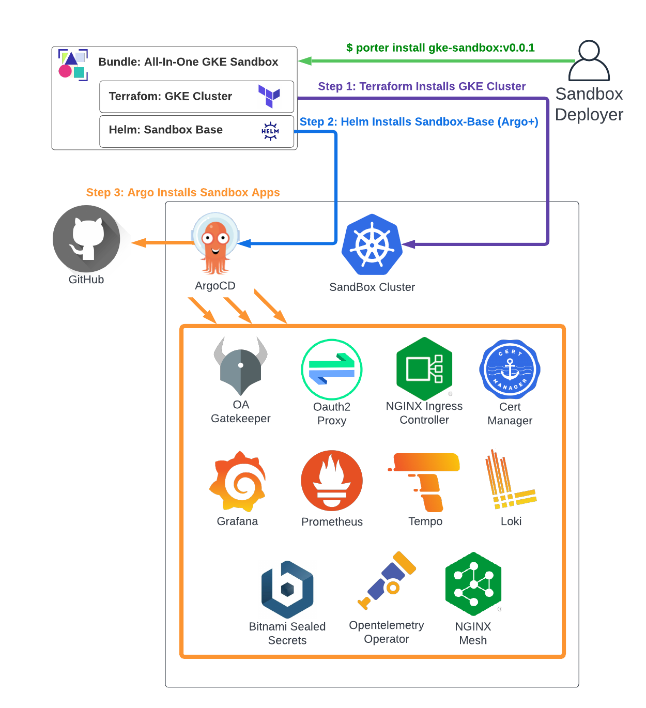

All-In-One Installation On GKE
The All-In-One installation uses Porter based CNAB bundles to deploy the cluster and Sandbox applications / services in a single command. If you're not familiar with Porter/CNAB, think of it as a docker container for your deployment pipelines - allowing you to compose multiple tools (e.g. helm, terraform, bash) into a single image with a common interface, that can be versioned, etc, just like an application container.
In this case, the bundle does 2 things:
- Invoke terraform to provision a Private GKE Cluster with the parameters passed to it via Porter.
- Invoke Helm to install the sandbox-base chart (which installs ArgoCD + Sandbox Argo App definitions) on top of the cluster from #1.

Below assumes a non-customized installation of the bundle. For more information on customizing included services, see Customizing Default Services.
1. Install Porter
Follow the Porter Installation Guide to install the recommended v1+ release on the machine which you wish to deploy the bundle from.
2. GKE Specific Pre-Reqs
You'll need the following available prior to deployment of the All-In-One GKE Sandbox Bundle in order to deploy the cluster:
- A GCP Project (Instructions).
- A Service Account and json key to Use For Deploying the cluster (see Porter Deployer Service Account below).
- (Optional) - A pre-existing Service Account name (key not required) to assign to the deployed nodes in the cluster (see Cluster Node Service Account below).
Porter Deployer Service Account
A GCP service account JSON key is required to deploy the bundle.
Required permissions for the deployer Service Account are found in a custom role definition file deployer_role.yaml. You can also use the following Built-In Roles:
- Compute Admin
- Compute Network Admin
- Kubernetes Engine Admin
- Kubernetes Engine Cluster Admin
- Service Account User
If you're not using the default compute engine service account or bringing a pre-existing SA, the deployer will also need Service Account Creator permissions.
Example account creation and permission commands (must be run by a user with permissions to create service accounts):
gcloud iam service-accounts create porter-deployer-sa \
--description="Service Account Used with Porter to deploy GCP assets" \
--display-name="Porter Deploy Service Account"
gcloud projects add-iam-policy-binding PROJECT_ID \
--member="serviceAccount:porter-deployer-sa@PROJECT_ID.iam.gserviceaccount.com" \
--role="roles/iam.serviceAccountUser"
gcloud projects add-iam-policy-binding PROJECT_ID \
--member="serviceAccount:porter-deployer-sa@PROJECT_ID.iam.gserviceaccount.com" \
--role="roles/container.admin"
gcloud projects add-iam-policy-binding PROJECT_ID \
--member="serviceAccount:porter-deployer-sa@PROJECT_ID.iam.gserviceaccount.com" \
--role="roles/container.clusterAdmin"
gcloud projects add-iam-policy-binding PROJECT_ID \
--member="serviceAccount:porter-deployer-sa@PROJECT_ID.iam.gserviceaccount.com" \
--role="roles/compute.networkAdmin"
gcloud projects add-iam-policy-binding PROJECT_ID \
--member="serviceAccount:porter-deployer-sa@PROJECT_ID.iam.gserviceaccount.com" \
--role="roles/compute.admin"
If you're not using the default compute engine service account or bringing a pre-existing SA:
gcloud projects add-iam-policy-binding PROJECT_ID \
--member="serviceAccount:porter-deployer-sa@PROJECT_ID.iam.gserviceaccount.com" \
--role="roles/iam.serviceAccountCreator"
Cluster Node Service Account (Optional)
If you elect to use the default compute engine service account (not required), or want to use a pre-existing service account for the Node Pool, you can specify it as a parameter to the installation bundle. The name of the service account can be passed as a parameter, no json key is required.
If the cluster needs access to Google Container Registry associated with the project, add the Storage Object Reader permission (or permissions for any other GCP resources to be accessed by the nodes).
Example gcloud commands:
gcloud iam service-accounts create sandbox-cluster-1-node-sa \
--description="Service Account For GKE Cluster Nodes" \
--display-name="Cluster Node Service Account"
# Optional additional permissions
gcloud projects add-iam-policy-binding PROJECT_ID \
--member="serviceAccount:sandbox-cluster-1-node-sa@PROJECT_ID.iam.gserviceaccount.com" \
--role="roles/storage.objectViewer"
3. Sandbox Common Pre-Reqs
In addition to the GCP specific pre-reqs, you'll also need the following for all default functionality:
- A subdomain to use with the deployment and access to create DNS records.
- An email address to use as contact info for Let's Encrypt Certificates.
- OIDC Client information from your identity provider.
Read more about these in the dedicated Common Pre-Reqs page.
4. Configure Porter
We strongly recommend managing porter installations via the "Desired State" mode. With this mode, you'll configure a few files that specify where porter can find the parameters and credentials needed to perform the deployment, and then invoke the installation itself through a series of 'Apply' commands.
We recommend setting up a new project with cluster specification as follows:
your_project/
cluster/
creds.yaml # Credentials spec for bundle installation
params.yaml # Parameters spec for bundle installation
installation.yaml # Installation spec
sandbox-values.yaml # Helm values to pass to sandbox-base helm chart installation
You can copy the files in the Example Cluster Directories and modify them as needed.
Porter Credentials File
The creds.yaml file contains references to where porter can find the sensitive parameters (e.g. passwords, keys, etc) needed to perform the install. An example declaration might look like this:
schemaVersion: 1.0.1
name: sandbox-cluster-1 # The name of the porter credential set that will be created
credentials:
- name: gcloud_key_file # The name of the credential that is passed to the bundle
source: # Where to find the value for the credential
path: /tmp/cloud.key # This specifies that the gcloud-key-file parameter comes from the path /tmp/cloud.key
- name: oidc_client_secret # The name of the credential that is passed to the bundle
source: # Where to find the value for the credential
env: OIDC_CLIENT_SECRET # This specifies that the oidc_client_secret parameter comes an environment variable named OIDC_CLIENT_SECRET
Place your Deployment Service Account Key from step 2 above in /tmp/gcloud.key (or the location of your choice, updating the file).
Set the value of OIDC_CLIENT_SECRET to your key value from step 3 above (not required if using the default Dex identity provider)
export OIDC_CLIENT_SECRET=YOUR_CLIENT_SECRET_VALUE
Porter Parameters File
The params.yaml file contains references to non-sensitive configuration values to use for bundle installation. An example declaration might look like this:
schemaVersion: 1.0.1
name: sandbox-cluster-1
parameters:
- name: cluster_domain
source:
value: #### YOUR_DOMAIN_HERE ####
- name: gcp_project
source:
value: #### YOUR_GCP_PROJECT_ID_HERE ####
- name: oidc_permitted_email_domains
source:
value: #### YOUR_EMAIL_DOMAIN_ALLOW_LIST_HERE (e.g. f5.com) ####
- name: oidc_client_id
source:
value: #### YOUR_OIDC_CLIENT_ID_HERE ####
- name: oidc_issuer_url
source:
value: #### YOUR_OIDC_ISSUER_URL_HERE ####
- name: letsencrypt_contact_email
source:
value: #### YOUR_CONTACT_EMAIL_HERE ####
- name: sandbox-values
source:
path: ./sandbox-values.yaml
Replace all instances of #### YOUR_X_HERE #### with the values obtained in steps 2 and 3 above.
- You can remove all
oidc_values if you're using the included local dex IDP. - You can remove
letsencrypt_contact_emailif you've set clusterTLSEnabled=false. - You can remove sandbox-values if you're not customizing helm values directly.
For additional parameters supported by the bundle, you can run porter explain ghcr.io/clhain/sandbox-gke-porter:v0.1.7
from the command line.
Porter Installation File
The installation.yaml file contains information about what credentials and parameters should be applied to a given installation of a particular bundle. If you re-named the credential or parameter sets from the values above, you'll need to update these values, otherwise the below should work without modification:
schemaVersion: 1.0.1
name: sandbox-cluster-1
bundle:
repository: ghcr.io/clhain/sandbox-gke-porter
version: v0.1.7
parameterSets:
- sandbox-cluster-1
credentialSets:
- sandbox-cluster-1
Sandbox Values File
The sandbox-values.yaml file contains additional helm values to pass to the installation of the sandbox-base charts, which are deployed automatically once the cluster is installed. The helm chart installs argo-cd to the new cluster, and then adds an ArgoCD Application spec which handles deployment of all Sandbox applications / services. See the Default Service Configuration guide for more info.
5. Install The Bundle
Once the params file is updated and the credentials are put in place (see above), the installation is straightforward:
porter creds apply cluster/creds.yaml
porter parameters apply cluster/params.yaml
porter installations apply cluster/installation.yaml
The GKE cluster will be deployed, and the initial Argo Installation will occur. Following that, the individual sandbox components will be installed by ArgoCD over the next 10-20 minutes. You can track the installation progress after connecting to the cluster with:
kubectl get application -n argocd
Once you see the following, you should be good to go (see Verification below for more info):
NAME SYNC STATUS HEALTH STATUS
argo-virtual-server Synced Healthy
cert-manager Synced Healthy
grafana Synced Healthy
loki Synced Healthy
nginx-ingress Synced Healthy
nginx-mesh Synced Healthy
oauth-proxy Synced Healthy
opentelemetry-operator Synced Healthy
prometheus-operator Synced Healthy
prometheus-operator-crds Synced Healthy
sandbox-apps Synced Healthy
temppo Synced Healthy
6. Verification
If you have the argocd CLI utility installed, you can use it to view additional information and troubleshoot issues as needed:
1) Fetch the ArgoCD Admin Password
kubectl -n argocd get secret argocd-initial-admin-secret -o jsonpath="{.data.password}" | base64 -d; echo
2) Port Forward ArgoCD CLI Commands
export ARGOCD_OPTS='--port-forward-namespace argocd'
3) Login To The ArgoCD Instance
argocd login --port-forward --insecure
4) View App Rollout Progress
argocd app get sandbox-apps
When complete you should see a list that looks like this (all items are Synced and Healthy/blank):
GROUP KIND NAMESPACE NAME STATUS HEALTH HOOK MESSAGE
Secret oauth-proxy dex-config-secret Synced secret/dex-config-secret configured
argoproj.io Application argocd cert-manager Synced Healthy application.argoproj.io/cert-manager configured
argoproj.io Application argocd nginx-ingress Synced Healthy application.argoproj.io/nginx-ingress configured
ConfigMap kube-system coredns Synced
Namespace oauth-proxy Synced
Secret oauth-proxy oauth-proxy-creds Synced
argoproj.io AppProject argocd cluster-services Synced
argoproj.io Application argocd argo-virtual-server Synced Healthy
argoproj.io Application argocd gatekeeper Synced Healthy
argoproj.io Application argocd grafana Synced Healthy
argoproj.io Application argocd loki Synced Healthy
argoproj.io Application argocd nginx-mesh Synced Healthy
argoproj.io Application argocd oauth-proxy Synced Healthy
argoproj.io Application argocd opentelemetry-operator Synced Healthy
argoproj.io Application argocd prometheus-operator Synced Healthy
argoproj.io Application argocd prometheus-operator-crds Synced Healthy
argoproj.io Application argocd sealed-secrets Synced Healthy
argoproj.io Application argocd tempo Synced Healthy
7. Access Sandbox Services
Once all services are in 'Synced, Healthy' state, and you've updated the DNS records as described here, you should be able to securely access the ArgoCD and Grafana services at:
https://argocd.YOUR_DOMAIN/
https://grafana.YOUR_DOMAIN/
If you're using the default Dex IDP, you can fetch the credentials for the admin@example.com domain from the cluster as follows:
kubectl get secret -n oauth-proxy oauth-proxy-creds -o jsonpath="{.data.admin-password}" | base64 -d; echo
Please see the troubleshooting guide for investigating issues.